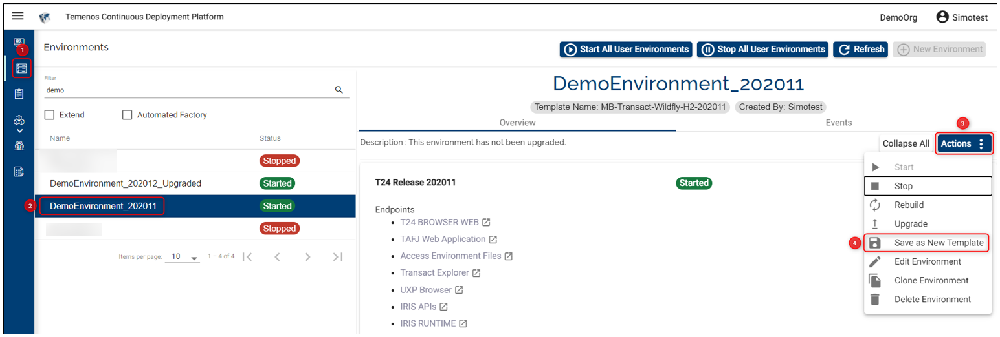
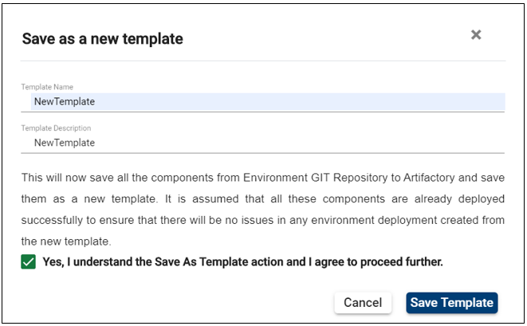
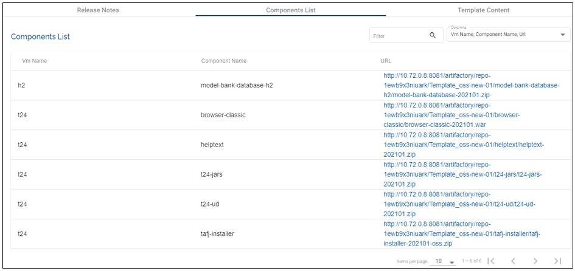
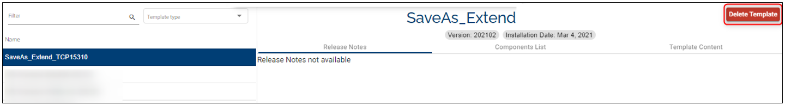

Note
Starting April 5th the TCD user guide will move to the Temenos Customer Support Portal (TCSP). We recommend you to log in to the portal and check if your credentials are available. Raise a ticket at CloudPlatformSupport@temenos.com if you encounter any issues.
Save as New Template
You can easily customize your templates via the Save as New Template feature. This self-service functionality enables you to create custom templates from a model bank template in just a few clicks. During this operation component binaries, deployment mechanisms or infrastructure can be changed and new components can be added.
By clicking on the Save as New Template all the components are copied from the environment GIT Repository to Artifactory and saves them as a new template.
To customize your template, you need to have at least the mandatory components uploaded and deployed successfully. This is to ensure that there will be no issues in any environment created from the new template (read here how you can deploy a component).
Create a new template
After deploying the components:
Click on the Environment tab from the left-side menu.
Select the Environment from the list.
On the environment page, expand the Actions button from the right.
Click on Save as New Template.

Read the information in the pop-up. Fill in the blanks, tick the box and then click on Save Template.

The template creation is initiated and you will be able to see it in the template catalog shortly.
After the template is created you can find it in the templates catalogue. Unlike the pre-defined templates, those resulted using the Save as New Template feature contain the Artifactory URL for each component (go to the Components List tab to access them).

Delete a custom template
You can delete a template created through Save as New Template feature:
On the templates page tick, in the filter box the Custom Templates - this action triggers the list of templates any user from your organisation created.
Select the template you want to delete.
Click Delete Template.

Note
This button is visible only for the custom templates.
You cannot restore a deleted template.
You cannot delete a custom template if:
It is used in any factory.
It is used by any extend environment.
Post template creation actions
After the template is successfully created you can:
- Provision an environment with the newly created template (learn here how to create an environment).
Note
If you want to use Design Studio, make sure that the axis2 and the corresponding ejb .jar files are deployed (as of now they are optional). Otherwise the Design Studio will not connect to the environment.
Similarly, it is up to you to deploy the dsf-iris.war files for the DSF package (learn here how to deploy them). Without these the DSF packages (l3, pre-dsf and post-dsf packages) will not be deployed.
- Run a factory using the template (learn here how to run factories).
Note
Only Templates which are created successfully using Save As Template option are displayed in the drop-down while creating Environments or Factories.
Tutorial
Watch the video tutorial here.
User Permissions Required
To be able to perform basic environment operations the below permissions need to be enabled for your user:
- MANAGE _ ENVIRONMENTS
- CREATE _ ENVIRONMENT
- UPDATE _ ENVIRONMENT
- DELETE _ ENVIRONMENT
- BOOST _ ENVIRONMENT
- REDEPLOY _ ENVIRONMENT
- START _ ENVIRONMENT
- STOP _ ENVIRONMENT
- ALLOW - EXPORT - ENVIRONMENT
- START - ALL - ENVIRONMENT
- STOP - ALL - ENVIRONMENT
- SCHEDULE _ ENVIRONMENT
- ALLOW - EXPORT - ENVIRONMENT
- MANAGE _ ENVIRONMENTS
To have a better understanding of the user permissions, hover the cursor over the variables and a short description will pop up or click here to read more.